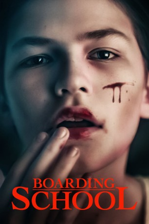

#10011 Boarding School
 
 IMDB-Wertung: 5.7 / 10
IMDB-Wertung: 5.7 / 10  Tomatometer: 33
Tomatometer: 33  Metascore: 45
Metascore: 45 
New York in den 1990er-Jahren: Der 12-jährige Junge Jacob (Luke Prael) hegt eine Begeisterung für düstere Comics, Monster wie Vampire und Horrorfilme. Dass der harte Stoff nicht kindertauglich ist, spiegelt sich in Jacobs nächtlichen Albträumen wieder, was Mutter Isabel (Samantha Mathis) zunehmend beunruhigt. Plötzlich entdeckt der Sonderling auch noch die Faszination für seine tote Großmutter, bis Jacob schließlich auf ein isoliertes Internat für Außenseiter geschickt wird. Dort erwartet ihn der mysteriöse Leiter Dr. Sherman (Will Patton) und einige weitere schräge Patienten. Doch dann fällt Jacob auf, dass er und seine sechs Mitinsassen auch schon alle sind, welche das Gebäude bewohnen. Was geht hier vor?
Jahr: 2018
Dauer: 111 Minuten
FSK: 16
Land: USA Studio: Momentum PicturesTonspuren: DTS - ,
Untertitel: Deutsch,
Auflösung: 1080p (1920x1040) Größe: 9236 MB
Genre: Horror
Regisseur:  Boaz Yakin
Boaz Yakin
Drehbuch: Boaz Yakin
Soundtrack: Lesley Barber
Darsteller:
- Luke Prael als Jacob Felsen
 Samantha Mathis als Isabel
Samantha Mathis als Isabel David Aaron Baker als Davis
David Aaron Baker als Davis- Barbara Kingsley als Tsipi Landau
 Robert John Burke als Mr. Holcomb
Robert John Burke als Mr. Holcomb Charlotte Ubben als Mrs. Holcomb
Charlotte Ubben als Mrs. Holcomb Sterling Jerins als Christine Holcomb
Sterling Jerins als Christine Holcomb- Matthew Miniero als Zachary
 Will Patton als Dr. Sherman
Will Patton als Dr. Sherman- Chris LaPanta als Claude
 Tammy Blanchard als Mrs. Sherman
Tammy Blanchard als Mrs. Sherman- Nadia Alexander als Phil
- Stephen Bogardus als Phil's Father
- Christopher Dylan White als Frederic
- Nicholas J. Oliveri als Elwood
- Kobi George als Lenny
- Kadin George als Calvin
- Allison Winn als Young Tsipi
- Lucy Walters als Mrs. Ramsay
- Sonya Balsara als Young Feiga
- Karen Cole als Phil's Mother (uncredited)
- Michael Wikes als Rabbi
- Owen Zamsky als Rupert Holcomb
- Tim Haber als Soldier
- Derek Zuzunaga als Jewish Boy In Hiding (uncredited)
Datei: X:\2018(A-F)\Boarding School (2018, FSK16, 1920x1040).mkv seit 20.11.2018
Festplatte: HD 2017(A-Z)-2018(A-F)
 Es gibt insgesamt 151 Filme in der Gruppe '2018(A-F)'
Es gibt insgesamt 151 Filme in der Gruppe '2018(A-F)'